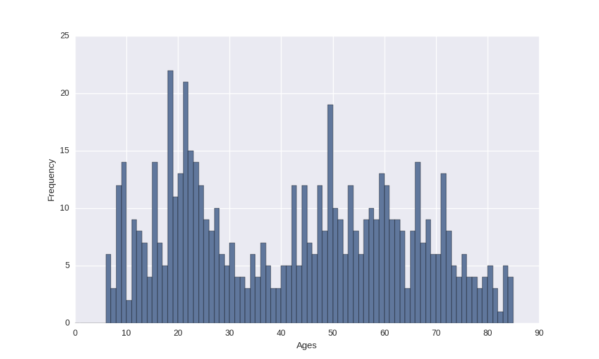
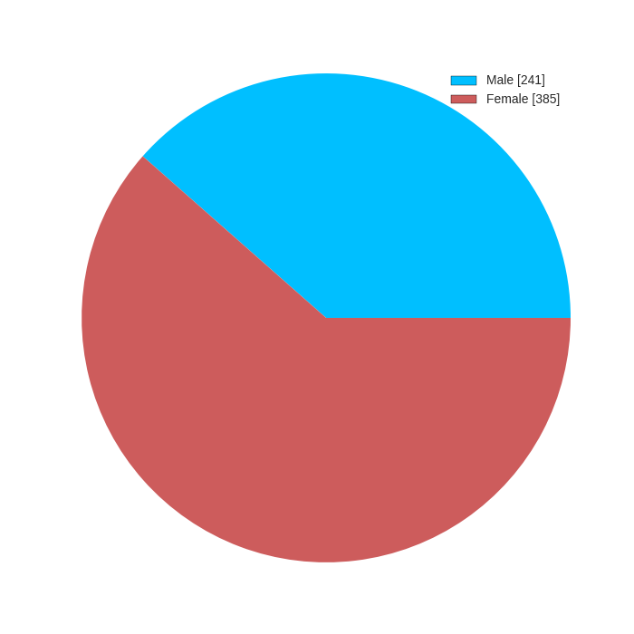

Current Sample Characteristics (As of July 2015)¶
The NKI-RS is designed to be a representitive, heterogeneous community sample. Exclusion criteria are minimal, and subjects vary widely in many respects. The following figures provide basic demographic information for the NKI-RS as of the 689th subject. Of these 689 participants, 657 have imaging data available.
Age¶

Sex¶

DSM-IV Diagnoses¶
| Diagnosis (Past and Current) | Total |
|---|---|
| No Diagnosis or Condition on Axis I | 341 |
| Alcohol Abuse | 69 |
| Cannabis Abuse | 53 |
| Major Depressive Disorder Single Episode In Full Remission | 47 |
| Alcohol Dependence | 33 |
| Cannabis Dependence | 18 |
| Panic Disorder Without Agoraphobia | 18 |
| Major Depressive Disorder Recurrent In Full Remission | 17 |
| Attention-Deficit/Hyperactivity Disorder NOS | 16 |
| Specific Phobia | 16 |
| Depressive Disorder NOS | 15 |
| Generalized Anxiety Disorder | 15 |
| Cocaine Abuse | 13 |
| Attention-Deficit/Hyperactivity Disorder Predominantly Inattentive Type | 13 |
| Attention-Deficit/Hyperactivity Disorder Combined Type | 13 |
| Social Phobia | 13 |
| Posttraumatic Stress Disorder | 11 |
| Cocaine Dependence | 9 |
| Enuresis (Not Due to a General Medical Condition) | 9 |
| Obsessive-Compulsive Disorder | 9 |
| Dysthymic Disorder | 6 |
| Amphetamine Abuse | 6 |
| Sedative Hypnotic or Anxiolytic Abuse | 5 |
| Major Depressive Disorder Recurrent In Partial Remission | 5 |
| Eating Disorder NOS | 5 |
| Oppositional Defiant Disorder | 5 |
| Separation Anxiety Disorder | 4 |
| Bereavement | 4 |
| Major Depressive Disorder Single Episode In Partial Remission | 4 |
| Panic Disorder With Agoraphobia | 3 |
| Major Depressive Disorder Recurrent Moderate | 3 |
| Psychotic Disorder NOS | 2 |
| Chronic Motor or Vocal Tic Disorder | 2 |
| Opioid Dependence | 2 |
| Attention-Deficit/Hyperactivity Disorder Predominantly Hyperactive-Impulsive Type | 2 |
| Hallucinogen Abuse | 2 |
| Major Depressive Disorder Recurrent Unspecified | 2 |
| Bipolar II Disorder | 1 |
| Schizophrenia Paranoid Type | 1 |
| Major Depressive Disorder Single Episode Unspecified | 1 |
| Major Depressive Disorder Recurrent Mild | 1 |
| Major Depressive Disorder Single Episode Moderate | 1 |
| Mood Disorder Due to General Medical Condition | 1 |
| Mood Disorder Due to Substance | 1 |
| Major Depressive Disorder Recurrent Severe Without Psychotic Features | 1 |
| Sedative Hypnotic or Anxiolytic Dependence | 1 |
| Hallucinogen Dependence | 1 |
| Opioid Abuse | 1 |
| Tic Disorder NOS | 1 |
| Anxiety Disorder Due to General Medical Condition | 1 |
| Inhalant Abuse | 1 |
| Transient Tic Disorder | 1 |
| Bulimia Nervosa | 1 |
| Encopresis Without Constipation and Overflow Incontinence | 1 |
| Body Dysmorphic Disorder | 1 |
| Bipolar Disorder NOS | 1 |
| Anxiety Disorder NOS | 1 |
| Bipolar I Disorder Most Recent Episode Unspecified | 1 |
| Amphetamine Dependence | 1 |

Table Of Contents
- Studies
- Recruitment
- Participant Schedule
- MRI Protocol
- Assessments
- Sample Characteristics
- Accessing Data
- Data Quality Check
- Publications
An open neuroscience project brought to you by: